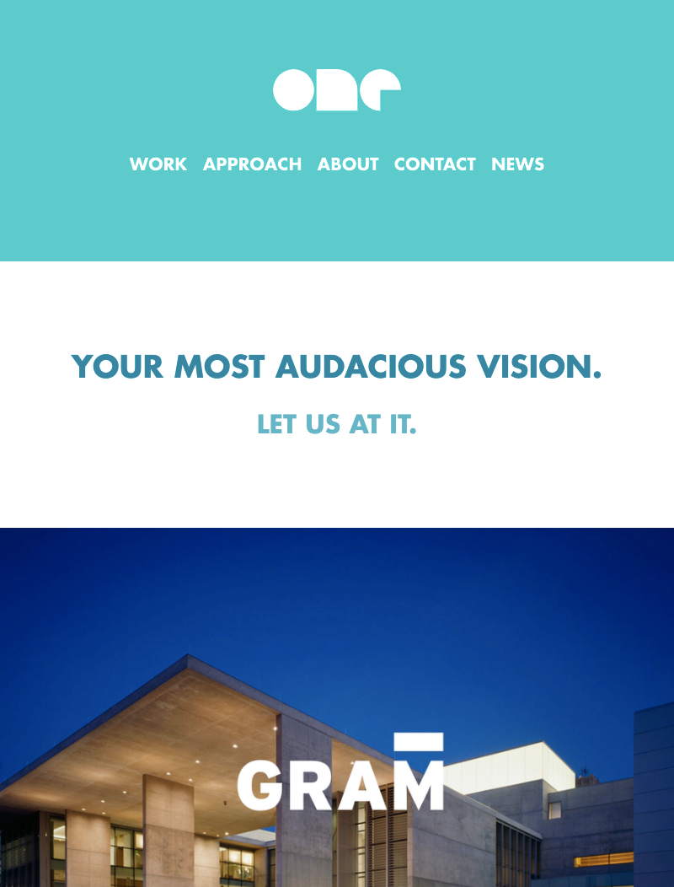
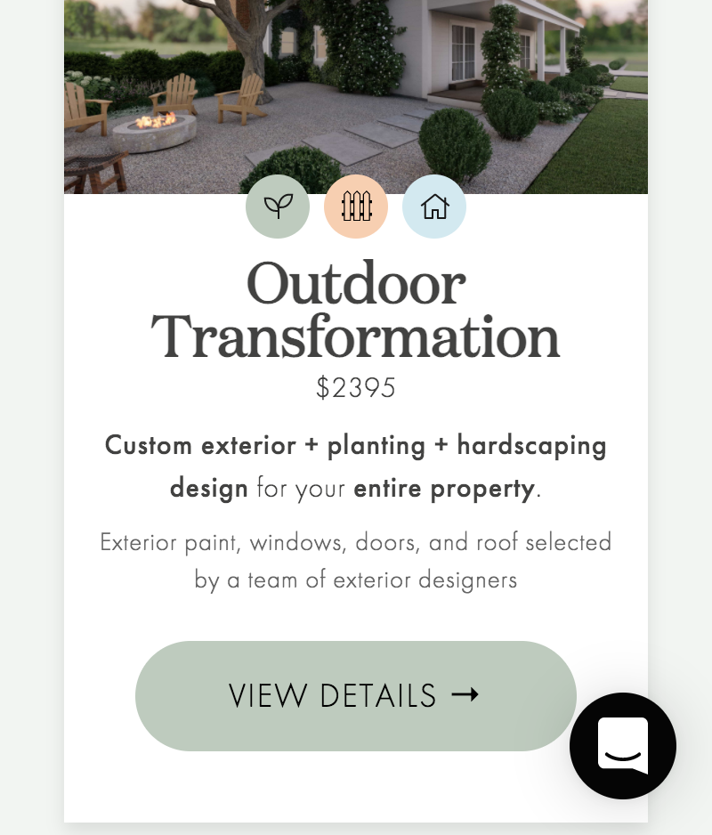

White Space
One Design Company
Company website In this example we can see that white space makes the design and its message more clear, legible and visually appealing. White space is a design element that makes a website uncluttere and simple.
Proximity
Xtensible
Company websiteIn this screenshot, you can clearly see what the picture, heading and paragraphs refer to. Proximity implies that objects that are related to each other will be closer. This helps us to convey several messages at once on one page, simply by combining them into visual groups.
Contrast
Yeardzen
Company website This screenshot clearly shows the contrast of colors and fonts. Contrast allows not only to make the message and page details readable and understandable, but it can also build the hierarchy of the page, directing the viewer's attention.